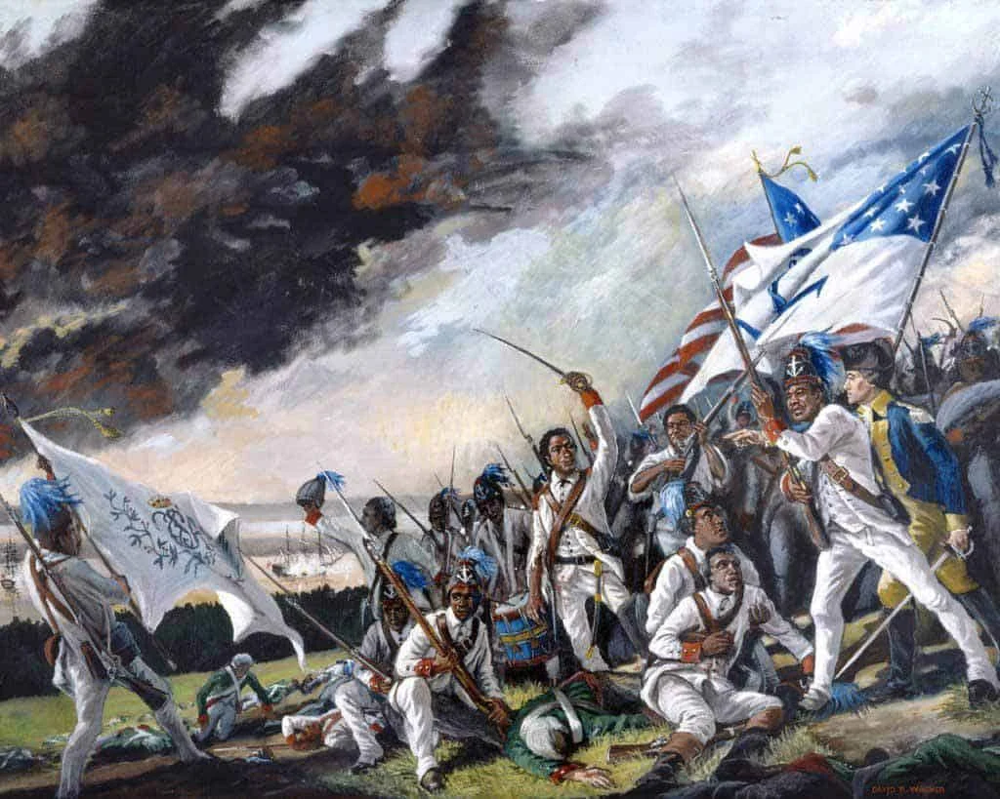

History
The Battle of Newport
Rhode Island although small played a huge role in the war for independence. It was the first state to rise up and rebel against British rule by denying an allegiance to Britain. One of Rhode Island most notable battles was the battle of Newport on August 29, 1778. The battle itself was special as it was the first time Americans and French military worked together. In addition, the first Rhode infantry consisted of different races African Americans, Native Americans, and Americans all fighting against British rule. It mainly showed how well the African Americans fought against the British and supported the cause for African American rights. The battle in itself was important as the British had taken hold Newport for several years. The British stayed in Newport for 3 years holding off against the Americans led by General John Sullivan. In October 1779, the British retreated allow the Americans to retake Newport.
Colonial Period
At the beginning of the colonial period many settlers from Europe sought new land to inhabit in North America. However, There were many dangers with unknown lands along with new animals, possible diseases ,and Native Americans. Yet, 13 colonies were able to be formed with one of them to be Rhode Island. The colony of Providence or Rhode Island was founded by Roger Williams who bought the land in 1636. Roger Williams had believed in the seperation of church and state preventing religon from influencing the government. Rhode Island at the time would be the only settlement that had any religous freedom. The Rhode Island colony was only complete after Roger had bought Aquidneck Island. Although Rhode Island was complete, it wasn't entirely due to the internal struggles between the settlements within the colony. The main conflict between these settlement were because of the differences in religion. Rhode Island would soon be called the Rogue Islands by the nearby colonies due the island to be split into various religions.